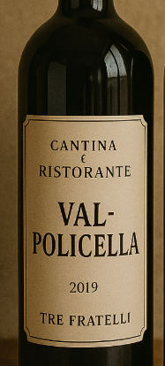
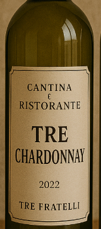

I nostri vini
Montagna & Tradizione
Produzioni artigianali ispirate al carattere valtellinese: uve locali, vendemmia manuale, affinamenti lenti. Ogni annata racconta il clima e il lavoro tra i terrazzamenti.
Linea Classica

Valpolicella Tre Fratelli 2019
Rosso agile e conviviale — edizione ispirata, produzione limitata.

Tre Chardonnay 2022
Bianco fresco, mela e fiori di montagna.

Merlot Tre Fratelli 2020
Frutto maturo, note di cacao, tannino morbido.